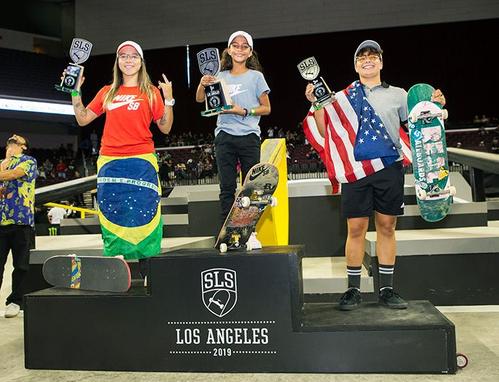
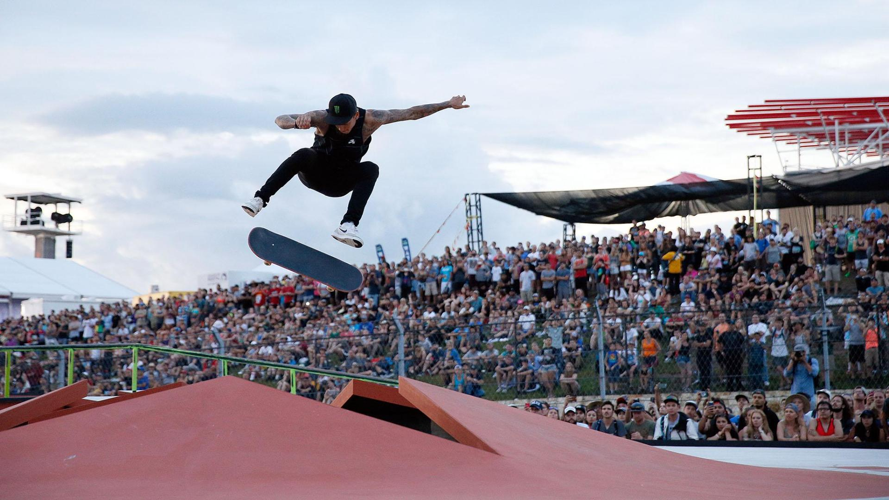
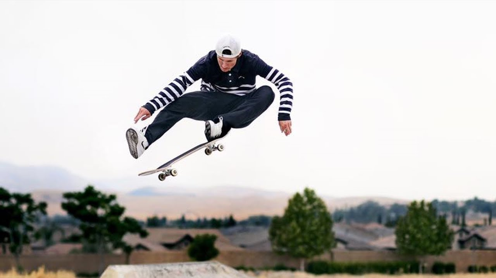

Começou a andar de skate aos 10 anos.
E com o tempo foi se destacando na visão de muitos skatistas profissionais e
em sua primeira viagem aos Estados
Unidos chamou a atenção de uma das marcas mais respeitadas do skate, a Flip,
a marca que até hoje o patrocina. Durante a sua adolescência, Marcus Cida e Cezar Gordo,
patrocinados pela Matriz Skate Shop (outra grande influência) foram essenciais para sua carreira no skate.
Após alguns anos Luan fez sua primeira viagem aos Estados Unidos onde chamou atenção de
uma das marcas mais respeitadas do skate, a Flip, que o patrocina atualmente.

Rayssa leal
A pequena Rayssa Leal, conhecida como 'Fadinha',
proporcionou um momento histórico para o skate brasileiro na noite desse domingo,
em Los Angeles. A maranhense de apenas 11 anos conquistou pela primeira vez uma etapa da SLS (Mundial de Skate Street),
se tornando a mais jovem atleta a conseguir a façanha. De quebra, a noite ainda foi de dobradinha brasileira na competição.
Em segundo lugar ficou a paulista Pâmela Rosa. Outra brasileira de peso na disputa foi Letícia Bufoni, tetracampeã mundial.
Ela terminou a final em sexto. A etapa americana conta pontos para o ranking olímpico.

Nyjah Huston
Ele tem apenas 24 anos,
mas já carrega nas costas a responsabilidade de ser o maior skatista da modalidade street da atualidade.
Para muitos, está entre os melhores de todos os tempos. Dono de 12 medalhas de ouro, quatro pratas e dois bronzes nos X Games,
além de quatro títulos mundiais da Street League Skateboarding (SLS), o americano Nyjah Huston é sinônimo de coragem,
técnica e criatividade nas quatro rodinhas. Número 1 do ranking mundial, o astro californiano busca garantir a primeira
medalha de ouro da história de sua modalidade para eternizar de vez seu nome nesse esporte.

Shane O'Neill
Shane O'Neill tem 28 anos
é um skatista profissional de Melbourne, Austrália
Shane é um membro do SLS "Clube 9", que significa que ele conseguiu um truque na Street League
que os juízes avaliaram com uma média de 9 ou melhor. Truque vencedora de Shane foi
um switchstance 360 double kickflip.
Em 2016 Shane ganhou uma medalha de prata nos X Games em Oslo.
Shane O'Neill foi patrocinado desde a idade de 14. Ele está patrocinado pela Nike SB
, thunder truks, Grizzly Griptape, Villager, Diamante Supply & Co. e Spitfire Rodas .
O'Neill foi anteriormente patrocinado pela Primitive Skateboarding , e Skate Mental.
Seja Bem Vindo!
Esse site esta em versão beta, somente alguns usuarios podem acessar!